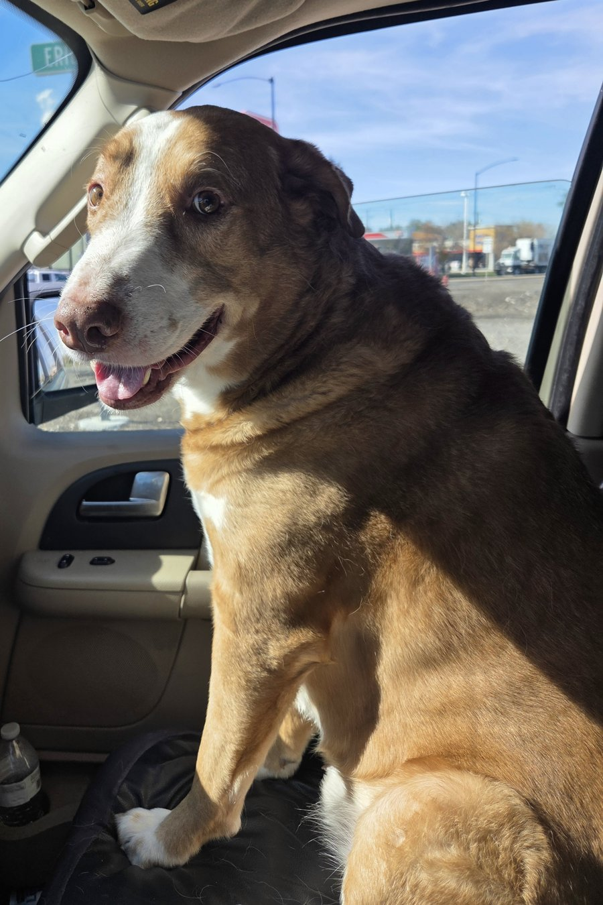

The last few days have been a lot of troubleshooting. The kind where you fix one thing and two more break, and then you find out the thing you fixed was never the problem. I've already written two posts about it, so I'm not going to rant a third time. It taught me a lot, and I'll leave it there.
Today I want to talk about things that are good.
The consult
I had a consult today for a client project, and it went well.
The product works the way it's supposed to, and the math works. That was the part I'd been nervous about, because if the math is wrong, nothing else matters. It held up.
What's left is organization: setting things up the way the client likes them, putting things where they expect to find them, and making it feel like their tool and not just a tool. That's real work, but it's the good kind. It's adjusting, not rebuilding.
Going into a meeting and coming out with "this works, let's tweak it" is a good day.
The first real ping
Earlier today I was sitting around waiting, writing up notes for that consult, and my phone buzzed. It was a push notification from Studio Desk: a new inquiry had come in through my website.
Studio Desk is the app I built a while ago to run the admin side of my business: inquiries, invoicing, all the stuff that has to happen but isn't the fun part. It's been done for a long time. But until today, every inquiry that went through it was one I sent myself to test it.
This one wasn't from me. Someone out in the world filled out the form, it landed in Studio Desk, and Studio Desk told me about it.
It was spam, of course. Someone asking if I wanted help with my marketing. lol.
I don't care. It came in on its own, the whole chain worked from start to finish, and my phone told me about it. For the first time, I know my inquiries are live and that I'm actually getting them. The first real one was junk, but the next one might not be.
Here's the bigger thing
I worked in sales for a long time. I've used a lot of sales software, and most of it is clunky. You click through five screens to do one thing, and half the features are there because someone in a meeting thought they sounded good.
Studio Desk isn't like that. It's easy to use and streamlined, and I built it that way because I've been the person stuck clicking through the clunky ones. There are still a few things in it I want to fix, but it's a real, working app, and I'm proud of it.
So at some point I'd like to sell it. I don't mean a free app. It's a full sales client, and it would be priced like one. Companies would set it up on their own server, the way they'd set up something like SalesPad. Same idea, but built by someone who actually had to use this kind of software every day and knows where it gets annoying.
That's a ways off. But it's starting to feel like a product and not just a thing I made for myself.
So that's today. A client project that works and my first real inquiry. It was spam, but it came through, and after the week I've had, I'll take it.
P.S. Django came along while I ran errands today. He didn't need to go anywhere. He just wanted to say hi, so he rode shotgun the whole time and kept me company. Here he is being my buddy.
